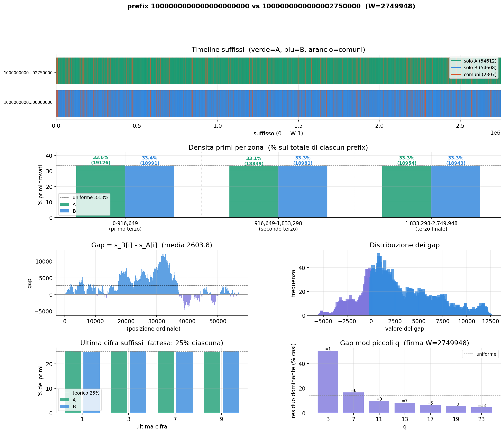
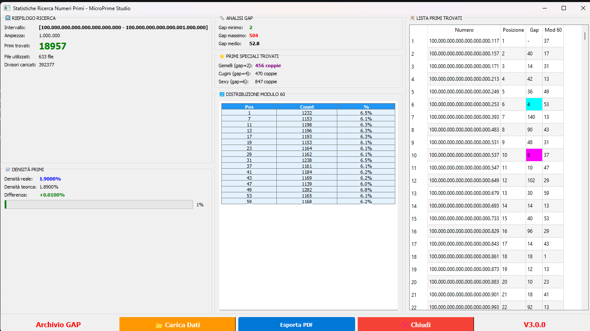
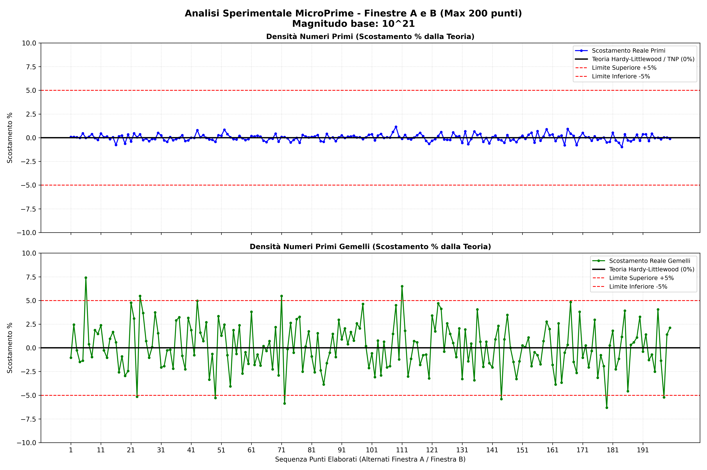

Experimental results produced by microprime_suffix and GC60-M30x3-suffix
at scales ranging from 10²¹ to 10²⁶. Each dataset is a sample of what
these tools can produce — the analyses shown here are a starting point,
not a conclusion.
◈
A note on open data
The primes collected by these programs are deterministic and verified —
every number in every output file has been confirmed as part of a complete, uninterrupted
prime sequence. What you do with them is entirely up to you.
A mathematician might look at gap distributions. A statistician at density deviations.
A programmer at the modular structure. The experiments shown here reflect the authors'
own interests — they are examples of a method, not a complete study.
Anyone can run the programs and explore different windows, scales, or questions.
Experiment type 1
Suffix analysis — two windows compared
microprime_suffix compares two prime windows placed at different positions on the number line,
analysing how their prime distributions relate through shared suffixes and gap behaviour.
The same type of experiment at different scales reveals qualitatively different dynamics.
prefix 10¹⁶ · W = 510,502
Solo A: 9,488 · Solo B: 9,185 · Common: 1,173
Negative ramp
// observed behaviour
The gap curve starts near zero and progressively drops to ~−5,000, then partially recovers. Window B accumulates a systematic lead over A throughout the entire window.

prefix 10²⁰ · W = 2,749,948
Solo A: 54,612 · Solo B: 54,608 · Common: 2,307
Oscillation
// observed behaviour
At higher scale, the gap oscillates symmetrically around zero — the two windows alternate without either prevailing. The gap distribution is bimodal, centred at zero.
Both experiments share a scale-invariant modular signature: for each small
prime q, the dominant residue of gap(i) mod q equals (−W) mod q. This property appears
identically at 10¹⁶ and 10²⁰ — it depends only on the window width W, not on where
the windows sit on the number line. The transition scale between ramp and oscillation
behaviour remains an open question.
Experiment type 2
Single window statistics at 10²⁶
A single window of width 1,000,000 positioned at 10²⁶ — produced by MicroPrime v3
using the precomputed GC-60 archive. The output includes a complete prime list,
gap analysis, special prime pairs, and modular distribution.

Interval: 10²⁶ · Width: 1,000,000 · 18,957 primes found ·
Real density: 1.9000% vs theoretical 1.8900% (+0.01%) ·
Twin pairs: 456 · Cousin pairs: 470 · Sexy pairs: 847 ·
Mod 60 distribution: uniform across all 16 offsets (~6.1–6.8%)
// what this shows
At 10²⁶ the prime density matches the theoretical prediction from the Prime Number Theorem
to within 0.01%. The mod 60 distribution is essentially flat — each of the 16 candidate
positions receives approximately 1/16 of the primes, confirming the geometric uniformity
of the GC-60 structure at extreme scale.
Experiment type 3
Hardy-Littlewood validation at 10²¹
200 consecutive window pairs at 10²¹ (W = 2,750,000), analysed against the
Hardy-Littlewood / Twin Prime Number theorem predictions. Each point in the chart
alternates between window A and window B of a pair.

200 window pairs · base 10²¹ · W = 2,750,000
Top: prime density deviation · Bottom: twin prime density deviation
Hardy-Littlewood
// what this shows
Prime density (top panel) stays within ±1% of the Hardy-Littlewood prediction across
all 200 windows — practically indistinguishable from the theoretical line.
Twin prime density (bottom panel) oscillates more widely but remains within ±7%,
consistent with the expected statistical variance at this window size.
This is empirical confirmation of Hardy-Littlewood at a scale never previously
measured with deterministic methods.
The underlying data for this chart — one row per window pair — illustrates the type
of structured output these programs produce. A sample of the first five pairs:
File
Start A
Primes A
Theoretical
Deviation A
Primes B
Deviation B
Common
Density %
HL theory %
suffix_data_1
10²¹
56,919
56,872
+47
56,915
+43
2,307
4.05
4.05
suffix_data_2
10²¹ + W
56,898
56,872
+26
56,861
−11
2,254
3.96
4.05
suffix_data_3
10²¹ + 2W
57,132
56,872
+260
56,859
−13
2,279
3.99
4.05
suffix_data_4
10²¹ + 3W
56,926
56,872
+54
57,086
+214
2,290
4.02
4.05
suffix_data_5
10²¹ + 4W
56,853
56,872
−19
56,737
−135
2,250
3.96
4.05
// sample — 5 of 200 rows · full dataset produced by microprime_suffix + analisi_suffix.py
Experiment type 4
Gap frequency matrix across 200 windows
For each of 200 consecutive windows at 10²¹, the primes are grouped by gap size —
how many pairs of consecutive primes are separated by 2, 4, 6, 8, 10, and so on.
Each row is one window; each column is a gap class. The result is a matrix that shows
how gap frequencies vary window by window, and which gap sizes dominate at this scale.
// what this shows
Small gaps (p_6, p_12, p_30) consistently dominate across all windows.
Large gaps (p_84, p_90) are rare but appear with surprising regularity —
their frequency per window is nearly constant despite the randomness of individual primes.
This regularity is itself a subject for further investigation.
A sample of the first five windows and first eight gap classes:
Window
p_2 (gap=2)
p_4
p_6
p_8
p_10
p_12
p_14
p_16
W_1
2924
3048
3090
3026
2955
2955
2923
2966
W_2
2653
2686
2617
2589
2647
2616
2680
2594
W_3
2435
2480
2410
2429
2467
2432
2510
2512
W_4
2353
2391
2415
2369
2411
2394
2272
2279
W_5
2124
2028
2091
2077
2146
2058
2136
2150
// sample — 5 of 200 windows · 8 of ~50 gap classes shown · full matrix produced by microprime_suffix